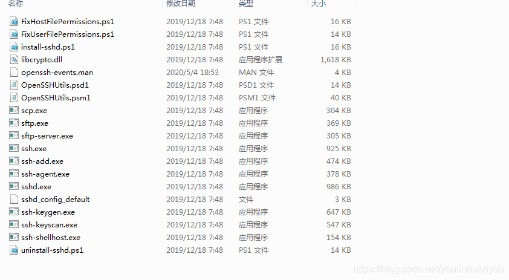

使用
上传文件
//使用方法：scp 源文件路径 账户@地址:目的路径
scp C:\Users\zbh\Desktop\1.txt lucas@192.168.11.150:/home/lucas/
然后输入密码即可
下载文件
scp lucas@192.168.110.128:/home/lucas/world.txt C:\Users\zbh\Desktop\
上传文件夹
scp -r C:\Users\zbh\Desktop\1.txt lucas@192.168.11.150:/home/lucas/
上传本目录下所有文件
scp -r * lucas@192.168.11.150:/home/lucas/
问题
win7可能不存在OpenSSH，需要安装
下载openSSH
下载，那当然需要去权威的地方下载，这里提供github发布版
文件夹G:\软件\编程\OPENSSH
使用cmd命令安装openSSH
step.1 解压到C:\Program Files\OpenSSH
据说官方要求放在这个目录下，跟着做就是了

ps 如果只是客户端使用，而不需要作为服务端，则到此为止。进入C:\Program Files\OpenSSH下，启动cmd 即可执行ssh登录到指定的服务器。
如果嫌进入目录麻烦，可以把C:\Program Files\OpenSSH目录添加到系统环境变量
我的电脑>属性>高级系统设置>环境变量>系统变量>Path末尾添加;C:\Program Files\OpenSSH
step.2 管理员启动cmd进入OpenSSH目录
1)安装sshd服务
1 | powershell.exe -ExecutionPolicy Bypass -File install-sshd.ps1 |
2)开发22端口
1 | netsh advfirewall firewall add rule name=sshd dir=in action=allow protocol=TCP localport=22 |
安装完成
启动服务
1 | net start sshd |
Linux远程连接服务器报错:
WARNING: REMOTE HOST IDENTIFICATION HAS CHANGED!
1 | @@@@@@@@@@@@@@@@@@@@@@@@@@@@@@@@@@@@@@@@@@@@@@@@@@@@@@@@@@@ |
原因：
本地记录的ip地址对应的服务器存在更改，可能为服务器端重装系统
解决方式:
1.在报错中找到以下日志:
Add correct host key in /Users/shimh/.ssh/known_hosts to get rid of this message.
2.用编辑器以可编辑的方式打开以下文件
/Users/shimh/.ssh/known_hosts
3.这个文件是存储当前设备的登录过的所有IP地址远程连接的密钥文件,找到你的服务器IP对应密钥的那一行删除掉
4.打开linux命令行重新登录就可以了